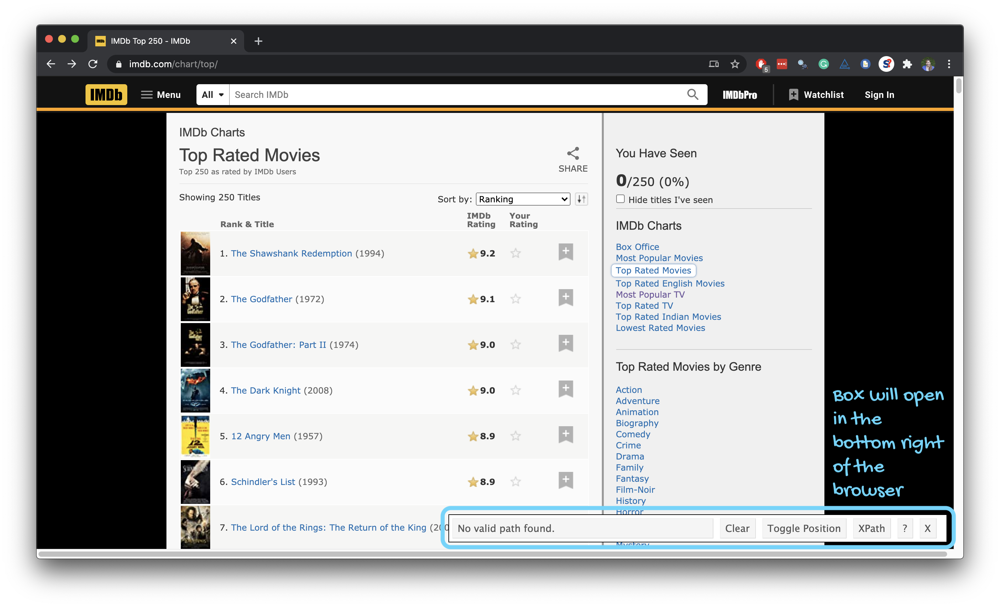

Web scraping
Data Science in a Box
layout: true
class: middle
Scraping the web
Scraping the web: what? why?
Increasing amount of data is available on the web
- These data are provided in an unstructured format: you can always copy&paste, but it’s time-consuming and prone to errors
| - Web scraping is the process of extracting this information automatically and transform it into a structured dataset |
|---|
| - Two different scenarios: - Screen scraping: extract data from source code of website, with html parser (easy) or regular expression matching (less easy). - Web APIs (application programming interface): website offers a set of structured http requests that return JSON or XML files. |
class: middle
Web Scraping with rvest
Hypertext Markup Language
- Most of the data on the web is still largely available as HTML
- It is structured (hierarchical / tree based), but it’’s often not available in a form useful for analysis (flat / tidy).
<html>
<head>
<title>This is a title</title>
</head>
<body>
<p align="center">Hello world!</p>
</body>
</html>rvest
.pull-left[ - The rvest package makes basic processing and manipulation of HTML data straight forward - It’s designed to work with pipelines built with %>%] .pull-right[]
Core rvest functions
read_html- Read HTML data from a url or character stringhtml_node- Select a specified node from HTML documenthtml_nodes- Select specified nodes from HTML documenthtml_table- Parse an HTML table into a data framehtml_text- Extract tag pairs’ contenthtml_name- Extract tags’ nameshtml_attrs- Extract all of each tag’s attributeshtml_attr- Extract tags’ attribute value by name
SelectorGadget
.pull-left-narrow[ - Open source tool that eases CSS selector generation and discovery - Easiest to use with the Chrome Extension - Find out more on the SelectorGadget vignette] .pull-right-wide[]
Using the SelectorGadget





Using the SelectorGadget
Through this process of selection and rejection, SelectorGadget helps you come up with the appropriate CSS selector for your needs